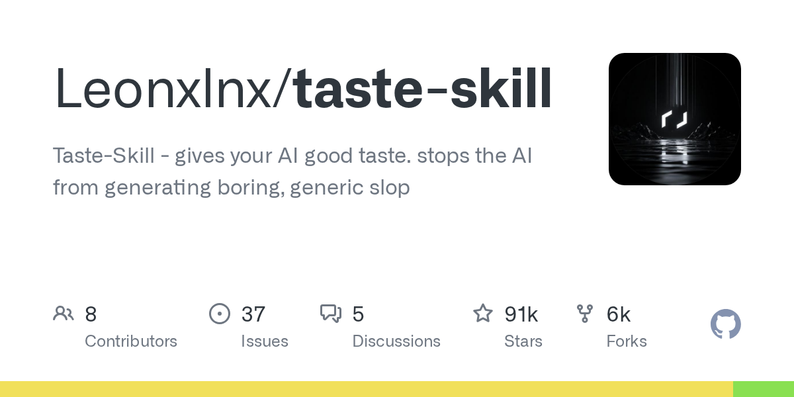

04 GitHub
Leonxlnx/taste-skill
AI 출력이 밋밋해지지 않게 잡는 기술 모음
★ 91,246이번 주 +1,861JavaScriptMIT 사내 사용 가능최근 활동 09.26테스트 없음예제 있음AGENTS.md 없음

AI 코딩 도구는 빨리 결과를 내지만, 화면과 문구가 비슷해지는 약점도 있다. 이 저장소는 그 문제를 줄이려는 지시문 모음을 내세운다. 만든 쪽은 디자인 의도를 겨냥한 규칙이라 React, Vue, Svelte 같은 특정 도구에 묶이지 않는다고 밝혔다. 설치 방식도 복잡하지 않다고 소개했다.
무엇을 하는 물건인가
이 저장소는 코딩 에이전트가 밋밋한 결과를 덜 만들도록 지시문을 묶어 둔 모음이다. 이 도구가 없으면 사용자가 대화마다 원하는 디자인 감각과 반복 금지 규칙을 직접 길게 적어야 한다. 만든 쪽은 여러 변형과 조절 항목, 반복 방지 규칙이 차별점이라고 밝혔다. 초안에 빨간 펜으로 취향 기준을 미리 적어 두는 보조 메모에 가깝다.
스펙과 도입 조건
- 주 언어 표기는 JavaScript다.
- 설치는 npx skills add로 하거나 파일을 저장소 또는 대화에 복사하는 방식으로 소개돼 있다.
- 특정 외부 API 키 필요 여부는 밝혀져 있지 않다.
- 라이선스는 MIT다.
- 정식 릴리스는 없다.
- 예시는 있다.
이럴 때 쓰면 좋다
- 사내 서비스 화면 시안을 AI로 여러 개 만들 때, 비슷한 카드 배치와 문구 반복을 줄이고 싶을 때 적합하다.
- 고객용 안내 페이지를 빠르게 초안 낼 때, 팀이 원하는 말투와 화면 인상을 일정하게 맞추고 싶을 때 쓸 수 있다.
- 프런트엔드 개발자가 React와 Vue를 오가며 AI 도움을 받을 때, 특정 도구 문법보다 디자인 의도 중심 규칙을 유지할 때 유용하다.
핵심 기능
- 여러 전문 변형을 제공한다.
- 핵심 기술에 조절 항목을 둔다.
- 전용 연구를 바탕으로 반복 방지 규칙을 적용한다.
왜 지금 주목받나
AI 코딩 도구를 많이 쓸수록 결과물이 서로 닮는 문제가 두드러진다. 이 저장소는 특정 도구 문법이 아니라 디자인 의도에 규칙을 둔다고 밝혔다. 그래서 React, Vue, Svelte를 가리지 않고 주요 코딩 에이전트에서 쓸 수 있다고 적었다. 사용자는 대화마다 긴 지시를 새로 쓰는 수고를 줄일 수 있다.
대안과 비교한 수치나 성능 실험은 공개되지 않았다. 대신 만든 쪽은 여러 전문 변형, 조절 항목, 반복 방지 규칙을 차별점으로 내세웠다. 설치도 파일 복사나 명령 한 번으로 끝나는 방식이라 시험 도입 문턱은 낮은 편이다.
사내 도입 체크
- 외부 API 호출 여부는 확인 필요다. 저장소 설명만으로는 호출 주체가 이 저장소인지, 연결한 에이전트인지 분명하지 않다.
- 데이터 반출 가능성은 연결한 코딩 에이전트 정책에 달려 있다. 이 저장소 자체 설명만으로는 확정하기 어렵다.
- 유지보수 주체는 개인 개발자로 보인다.
- 상용 제품 대체 여부는 확인 필요다. 다만 AI 출력의 톤과 반복을 제어하는 보조 지시문 묶음이라는 성격은 분명하다.
주요 용어
원문 정보
제목: Leonxlnx/taste-skill
최근 활동: 2026.09.26